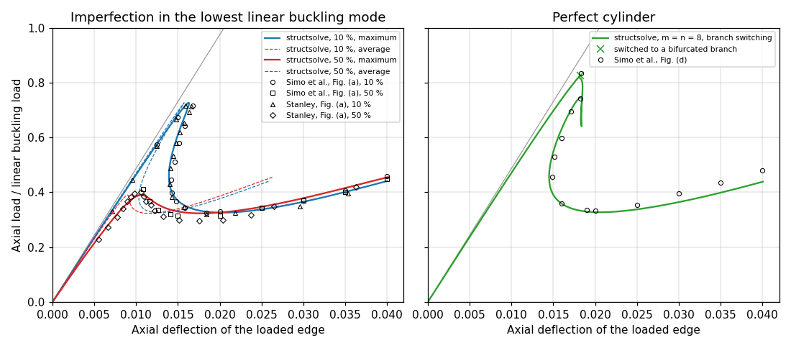

Post-buckling of an axially compressed cylinder#
The Riks method of structsolve traces the post-buckling path of a thin cylinder under axial compression, deep into the post-buckled regime, for the benchmark of Simo, Fox and Rifai (1990) [1], Section 6.3.4, “Post-buckling analysis of a simply-supported cylinder; effect of initial imperfections”, pp. 54-57, Fig. 6.3.4 on p. 56, after Stanley (1985) [2]: radius \(R = 36\), length \(L = 100\), thickness \(t = 0.125\), \(E = 10^7\), \(\nu = 0.3\), in consistent units.
The model and the analyses are in notebooks/simo1990_utils.py of the
repository, which needs panels
0.15.0 (which requires structsolve 0.10.0 or later, and is not a
dependency of structsolve):
the notebook
notebooks/simo1990_cylinder_postbuckling.ipynb, stored with its outputs, runs the checks of the imperfection, the 10 % and 50 % imperfections and the perfect cylinder withlinear_solver = 'pardiso'and'splu'with \(m = n = 8\) terms, compares them with the figure and discusses them, in about 3.5 min;the test
tests/test_simo1990_cylinder.pychecks the imperfection, the limit load of the 50 % imperfection and the bifurcation and minimum loads of the perfect cylinder with both linear solvers (\(m = n = 8\), about 1.5 min); it is skipped where panels is not installed, and its'pardiso'case where oneMKL is not;the command line of
simo1990_utils.pycomputed the convergence study and the figure of this page, from the root of the repository (;separates the paths on Windows,:elsewhere):PYTHONPATH=".;<panels>" python notebooks/simo1990_utils.py verify PYTHONPATH=... python notebooks/simo1990_utils.py riks 0.1 12 12 PYTHONPATH=... python notebooks/simo1990_utils.py perfect 8 8 PYTHONPATH=... python notebooks/simo1990_utils.py perfect 12 12 10 pardiso PYTHONPATH=... python notebooks/simo1990_utils.py summary PYTHONPATH=... python notebooks/simo1990_utils.py plot
riksandperfectsave their paths in the directory of the environment variableSIMO1990_OUT, read bysummary(the tables below) andplot, see the docstring of the module.
The model#
As in [1] and [2], an \(L/10 \times 15°\) section is modelled, with
symmetry conditions on the interior edges and a simple support on the
loaded edge, such that the lowest buckling mode is the diamond mode of 5
axial half-waves and 12 circumferential waves: the section spans a quarter
of an axial wave and half a circumferential wave. It is a single
panels.shell.Shell of panels
0.15.0 with the Donnell kinematics, model = 'cylshell_clpt_donnell',
\(a = L/10 = 10\) along the axis \(x\) and \(b = R \pi/12 = 9.42\) along the arc
\(y\), with the boundary conditions given by the flags of Bardell’s functions
(0 removes the value, r its normal derivative):
Edge |
Condition |
Flags |
|---|---|---|
\(x = 0\), loaded |
simple support, \(v = w = 0\) |
|
\(x = a\) |
symmetry, \(u = v_{,x} = w_{,x} = 0\) |
|
\(y = 0\), \(y = b\) |
symmetry, \(u_{,y} = v = w_{,y} = 0\) |
|
The load is the axial force per unit length of the circumference
\(N_{cl} = E t^2/(R \sqrt{3(1 - \nu^2)}) = 2626.9\) applied at \(x = 0\) with
add_distr_load_fixed_x, scaled by the lowest load multiplier of the
linear buckling analysis, lb(), such that the load factor is the load
normalized by the linear buckling load, as in [1]. With \(m = n\) Bardell
terms along \(x\) and \(y\) the linear buckling load is \(1.00472 N_{cl}\) for
\(m = n = 8\) and \(1.00415 N_{cl}\) for \(m = n = 10, 12, 14\). The linear
shortening of the loaded edge at the linear buckling load is 0.02095,
whereas the straight line of the linear prebuckling response in Fig. 6.3.4
reaches the load 1 at an axial deflection of 0.0205 (read from the
figure, \(\pm 0.0002\)): the abscissae of [1] are thus the shortening of the
\(L/10\) section at the loaded edge, the 2 % difference coming from the
normalizing buckling load or the prebuckling stiffness of the finite
elements of [1].
The initial imperfection#
Neither panels nor structsolve takes a geometric imperfection. For the Donnell kinematics it is added exactly as follows. Let \(w_0(x, y)\) be the imperfection, of Ritz vector \(\boldsymbol{c}_0\) (the \(w\) part of the lowest linear buckling mode, \(u = v = 0\), scaled to \(\max |w_0| = \xi t\)). The membrane strains of the imperfect shell are
and the curvatures are those of \(w\), linear. Since the non-linear terms are quadratic in \(w\), these are exactly the differences of the strains of the perfect shell, \(\boldsymbol{\varepsilon}_{imp}(\boldsymbol{c}) = \boldsymbol{\varepsilon}(\boldsymbol{c} + \boldsymbol{c}_0) - \boldsymbol{\varepsilon}(\boldsymbol{c}_0)\), and the stress resultants are \(\boldsymbol{N}_{imp} = \boldsymbol{N}(\boldsymbol{c} + \boldsymbol{c}_0) - \boldsymbol{N}_0\), \(\boldsymbol{N}_0 = \boldsymbol{N}(\boldsymbol{c}_0)\), the resultants of the linear and non-linear strains of the state \(\boldsymbol{c}_0\). With \(\boldsymbol{B}(\boldsymbol{c}) = \partial \boldsymbol{\varepsilon}/\partial \boldsymbol{c}\), affine in \(\boldsymbol{c}\), the internal force vector of the imperfect shell is
because \(\int (\boldsymbol{B}(\boldsymbol{c} + \boldsymbol{c}_0) - \boldsymbol{B}(\boldsymbol{c}_0))^\top \boldsymbol{N}_0 dA = \boldsymbol{K}_G(\boldsymbol{N}_0) \boldsymbol{c}\), with the geometric stiffness matrix \(\boldsymbol{K}_G(\boldsymbol{N}_0) = \int (N_{0xx} \boldsymbol{g}_x^\top \boldsymbol{g}_x + N_{0xy} (\boldsymbol{g}_x^\top \boldsymbol{g}_y + \boldsymbol{g}_y^\top \boldsymbol{g}_x) + N_{0yy} \boldsymbol{g}_y^\top \boldsymbol{g}_y) dA\), \(\boldsymbol{g}_x\) and \(\boldsymbol{g}_y\) the rows of the approximation of \(w_{,x}\) and \(w_{,y}\). The bending part follows the same formula, its strains being linear. The tangent stiffness matrix is
and \(\boldsymbol{F}_{int,imp}(\boldsymbol{0}) = \boldsymbol{0}\): the imperfect
shell is unstressed at \(\boldsymbol{c} = \boldsymbol{0}\), and its linear
stiffness matrix is \(\boldsymbol{K}_{T,imp}(\boldsymbol{0})\). Panels’
Shell.calc_kG() with c = c0 cannot be used for
\(\boldsymbol{K}_G(\boldsymbol{N}_0)\): it has the resultants of the linear part
of the strains only (the geometric stiffness of the non-linear part is in
calc_kC(c, NLgeom=True)), such that it is homogeneous of degree one in
c. The module integrates \(\boldsymbol{K}_G(\boldsymbol{N}_0)\) at the
Gauss points of the shell, with \(\boldsymbol{N}_0\) from
Shell.stress() with NLgeom=True and the derivatives of Bardell’s
functions of panels.bardell. The callables passed to
Analysis are:
class ImperfectShell(object):
r"""Callables of structsolve for the shell with an initial imperfection
For the Donnell kinematics the membrane strains and the curvatures of
the imperfect shell are ``eps(c + c0) - eps(c0)``, which gives
``fint_imp(c) = fint(c + c0) - fint(c0) - kG(N0) c``
``kT_imp(c) = kT(c + c0) - kG(N0)``
with ``N0`` the membrane resultants, linear and non-linear parts, of the
state ``c0``, see the documentation page.
"""
def __init__(self, s, c0):
self.s = s
self.c0 = np.asarray(c0, dtype=float)
self.fint0 = s.calc_fint(self.c0)
self.kG0 = calc_kG_N(s, membrane_stresses(s, self.c0, NLgeom=True))
self.kT0 = self.calc_kT(np.zeros_like(self.c0))
self.size = s.get_size()
def calc_fext(self, inc=1., silent=True):
return self.s.calc_fext(inc=inc, silent=silent)
def calc_fint(self, c, silent=True):
return self.s.calc_fint(c + self.c0) - self.fint0 - self.kG0 @ c
def calc_kT(self, c):
return csr_matrix(self.s.calc_kT(c=c + self.c0) - self.kG0)
def calc_kC(self, c=None, NLgeom=False, silent=True):
if c is None or not NLgeom:
return self.kT0
return self.calc_kT(c)
def calc_kG(self, c=None, NLgeom=False, silent=True):
return csr_matrix((self.size, self.size))
The command verify of the module checks (also in the notebook and,
for \(m = n = 6\), in the test), for \(m = n = 8\) and \(\xi = 0.5\):
the matrix of the module with the linear resultants equals
calc_kG(c)of panels to \(8 \times 10^{-16}\), whereas with the complete resultants the two differ by \(2 \times 10^{-3}\) (relative maximum entry, random state), i.e.calc_kG(c)has no non-linear resultants;\(\boldsymbol{F}_{int,imp}(\boldsymbol{0}) = \boldsymbol{0}\) exactly, and without imperfection the model is the perfect one exactly;
the central differences of \(\boldsymbol{F}_{int,imp}\) along a random direction match \(\boldsymbol{K}_{T,imp} \boldsymbol{v}\) to \(7 \times 10^{-14}\) (\(h = 10^{-5}\)), at a state with \(\max|w| = 0.3 t\);
independently of the formula above, the central differences of the strain energy \(\tfrac{1}{2}\int \boldsymbol{\varepsilon}_{imp}^\top \boldsymbol{ABD}\, \boldsymbol{\varepsilon}_{imp} dA\), integrated from
Shell.strain()of \(\boldsymbol{c} + \boldsymbol{c}_0\) and \(\boldsymbol{c}_0\), match \(\boldsymbol{F}_{int,imp}(\boldsymbol{c})^\top \boldsymbol{v}\) to \(1.7 \times 10^{-8}\) and \(1.7 \times 10^{-10}\) for \(h = 10^{-4}\) and \(10^{-5}\) (second order), whereas withcalc_kG(c0)in place of \(\boldsymbol{K}_G(\boldsymbol{N}_0)\) the difference is \(7.5 \times 10^{-5}\).
The analyses#
NL_method = 'arc_length_riks' with final_load_factor = None,
initialInc = maxInc = 0.1 and the stop criterion
stopping.value_reached() of the maximum axial deflection 0.04, all
other attributes at their default values, e.g. Crisfield’s convergence
criterion with relTOL = 1e-9. The residual of every converged increment
is below \(10^{-9}\) of the reference load. The maximum and the average axial
deflections are those of \(u(0, y)\) over 61 points along the loaded edge.
The perfect cylinder runs with inertia = True and branch_switching =
10, initialInc = maxInc = 0.03 and the unknowns scaled to a unit
diagonal of the linear stiffness matrix (the class ScaledModel of the
module, which changes only the coordinates of the Ritz vector), with
linear_solver = 'splu' (the sign of the determinant, perfect 8 8)
or 'pardiso' (the number of negative eigenvalues, perfect 12 12 10
pardiso). This benchmark found two weaknesses of structsolve, fixed in
0.10.0: the subspace of arc_length._critical_eigenvector(), of
num_neg + 2 vectors, held the eigenvalues closest to zero, those of
weakly stiff in-plane Ritz terms, constant along the path (\(1.5 \times
10^{-4}\) in the scaled unknowns), such that the eigenvector returned was not
the critical one and the switch converged back on the fundamental path; it
now grows until it holds the negative eigenvalues counted by the
factorization (48 vectors with \(m = n = 12\)). And the count of negative
eigenvalues of PARDISO, with 18 to 20 perturbed pivots of these dense
tangent stiffness matrices, was late, from the load factor 0.90 on, where a
dense eigenvalue analysis has the first negative eigenvalue from 0.83 on;
a factorization with perturbed pivots is now repeated with iparm(24) =
1, without perturbed pivots, see static._factorize().
Results#
The values read from Fig. 6.3.4 of [1] (\(\pm 0.0003\) in the axial deflection and \(\pm 0.01\) in the load, see the module for all the points) against structsolve, with \(m = n = 12\) unless stated; \(u_{max}\) and \(u_{avg}\) are the maximum and the average axial deflection of the loaded edge, the first limit load is the first maximum of the load, the minimum load is the minimum after it, and \(P(0.04)\) the load at \(u_{max} = 0.04\):
Quantity |
Simo et al. [1], read |
Stanley [2], read |
structsolve |
|---|---|---|---|
10 %: first limit load |
0.715 |
0.717 |
0.727 |
10 %: \(u_{max}\) at the limit load |
0.0168 |
0.0159 to 0.0166 |
0.0163 |
10 %: smallest \(u_{max}\) of the snap-back |
0.0142 |
0.0140 |
0.0139 |
10 %: minimum load |
0.326 at 0.018 |
0.319 at 0.018 |
0.326 at 0.0203 |
10 %: load at \(u_{max}\) = 0.025, 0.03, 0.035 |
0.344, 0.372, 0.406 |
0.395 at 0.0353 |
0.338, 0.365, 0.401 |
50 %: first limit load |
0.411 |
0.402 |
0.390 |
50 %: \(u_{max}\) at the limit load |
0.0108 |
0.0106 |
0.0107 |
50 %: minimum load |
0.315 at 0.015-0.020 |
0.297 at 0.0175 |
0.323 at 0.0177 |
50 %: load at \(u_{max}\) = 0.025, 0.03, 0.035 |
0.344, 0.370, 0.401 |
0.420 at 0.0363 |
0.347, 0.379, 0.42 |
10 % and 50 %: load at \(u_{max}\) = 0.04 |
0.459 and 0.449 |
0.441 and 0.455 |
|
perfect: first bifurcation load |
0.833 |
0.827 (m = n = 8) |
|
perfect: \(u_{max}\) at the bifurcation |
0.0183 |
0.0182 |
|
perfect: smallest \(u_{max}\) after it |
0.0149 at 0.457 |
0.0145 at 0.453 |
|
perfect: minimum load |
0.333 at 0.020 |
0.327 at 0.0208 |
|
perfect: load at \(u_{max}\) = 0.03, 0.04 |
0.397, 0.480 |
0.364, 0.438 |
At \(u_{max}\) = 0.04 the two curves of Fig. 6.3.4 (a) are 0.01 apart, after crossing each other, such that which one is the 10 % imperfection is not certain from the figure.
The Ritz approximation is converged: from \(m = n = 10\) on, the limit loads, the minimum loads and the loads at \(u_{max} = 0.04\) do not change in the third digit, see the table below and the dotted curves of \(m = n = 8, 10, 14\) in the figure, which are on the curves of \(m = n = 12\):
Case |
m = n |
Buckling load / \(N_{cl}\) |
First limit load |
\(u_{max}\), \(u_{avg}\) at it |
Minimum load, \(u_{max}\) at it |
\(P(0.04)\) |
Increments, time (s) |
|---|---|---|---|---|---|---|---|
10 % |
8 |
1.00472 |
0.7276 |
0.01630, 0.01576 |
0.3268, 0.0201 |
0.4420 |
260, 49 |
10 % |
10 |
1.00416 |
0.7267 |
0.01630, 0.01574 |
0.3261, 0.0203 |
0.4412 |
278, 215 |
10 % |
12 |
1.00415 |
0.7267 |
0.01630, 0.01574 |
0.3260, 0.0203 |
0.4411 |
281, 580 |
10 % |
14 |
1.00415 |
0.7267 |
0.01630, 0.01574 |
0.3260, 0.0203 |
0.4411 |
282, 1420 |
50 % |
8 |
1.00472 |
0.3928 |
0.01072, 0.00904 |
0.3228, 0.0173 |
0.4552 |
85, 21 |
50 % |
10 |
1.00416 |
0.3905 |
0.01071, 0.00901 |
0.3234, 0.0178 |
0.4547 |
90, 87 |
50 % |
12 |
1.00415 |
0.3902 |
0.01069, 0.00900 |
0.3234, 0.0177 |
0.4546 |
91, 255 |
50 % |
14 |
1.00415 |
0.3902 |
0.01069, 0.00900 |
0.3234, 0.0177 |
0.4545 |
91, 568 |
perfect |
8 |
1.00472 |
0.8273 |
0.01821, 0.01821 |
0.3273, 0.0208 |
0.4383 |
174, 51 |
perfect |
8 P |
1.00472 |
0.8273 |
0.01821, 0.01821 |
0.3273, 0.0208 |
0.438 |
174, 56 |
perfect |
10 P |
1.00416 |
0.8270 |
0.01821, 0.01821 |
0.326, 0.0209 |
0.438 |
181, 189 |
perfect |
12 P |
1.00415 |
0.8267 |
0.01821, 0.01821 |
0.326, 0.0209 |
0.437 |
182, 429 |
P: linear_solver = 'pardiso', otherwise 'splu', which gives the
same perfect paths with \(m = n = 10\) and \(12\) (199 s and 553 s). The times are those of one process (MKL_NUM_THREADS=1) on a laptop
shared with other jobs, mostly spent in the internal forces and tangent
stiffness matrices of panels.


The computed curves agree with those of [1] and the points of Stanley [2] on the whole path: the limit loads differ from those of [1] by +0.012 (10 %) and -0.021 (50 %) of the buckling load, and from those of [2] by +0.010 and -0.012; the deflections at the limit loads agree within 0.0005, the snap-back of the 10 % imperfection, back to \(u_{max} = 0.0139\) (0.0142 read in [1]), and the post-buckling plateau at 0.32 to 0.33 are reproduced, and from \(u_{max} = 0.025\) to 0.04 the loads are within 0.02 of [1]. Fig. 6.3.4 (a) plots the maximum axial deflection; Fig. 6.3.4 (c) of [1] shows how much smaller the average deflection is in the post-buckled regime, as do the dashed curves.
The perfect cylinder#
With \(m = n = 8\) the sign of the determinant changes at the load factor 0.827, the bifurcation is switched to along the critical eigenvector, and the bifurcated branch is traced down to the post-buckling plateau and up to \(u_{max} = 0.04\) in 174 increments (51 s): the bifurcation load and deflection and the snap-back of the curve, to \(u_{max} = 0.0145\) at the load 0.453, are those of Fig. 6.3.4 (d) within the reading precision, the minimum load is 0.006 below, and the loads beyond \(u_{max} = 0.025\) are 0.02 to 0.04 below those of [1], whose curve, the envelope of the paths of several branch switches as they say, ends above those of the imperfect cylinders, whereas the computed one, of a single switch, ends just below them. The bifurcation load 0.827 is 18 % below the linear buckling load, because of the non-linear axisymmetric prebuckling of the radially restrained loaded edge: the tangent stiffness matrix of the fundamental path has its first negative eigenvalue between the load factors 0.817 and 0.834 (dense eigenvalues, \(m = n = 8\); the same for \(m = n = 12\)).
With linear_solver = 'pardiso' the switch happens at the first
negative eigenvalue for \(m = n = 8, 10, 12\), at 0.8273, 0.8270 and 0.8267,
and the bifurcated branch is traced down to the plateau, 0.327, 0.326 and
0.326, and to \(u_{max} = 0.04\) (0.438, 0.438, 0.437), in 174 to 182
increments: the perfect cylinder is converged in the Ritz terms as well.
With 'splu' the paths are the same, to the digits of the table, with
\(m = n = 10\) and \(12\) as well (181 and 182 increments): the sign of the
determinant changes at the load 0.827, and since 0.10.0 the eigenvector
search, without a count of negative eigenvalues, looks for at least one
negative eigenvalue when the determinant is negative, past the weakly stiff
in-plane Ritz terms (scaled eigenvalues of \(1.8 \times 10^{-5}\) and \(3.3
\times 10^{-6}\)); before, the switch failed with these terms and the path
stayed on the fundamental branch up to the load 0.980 at \(u_{max} = 0.04\).